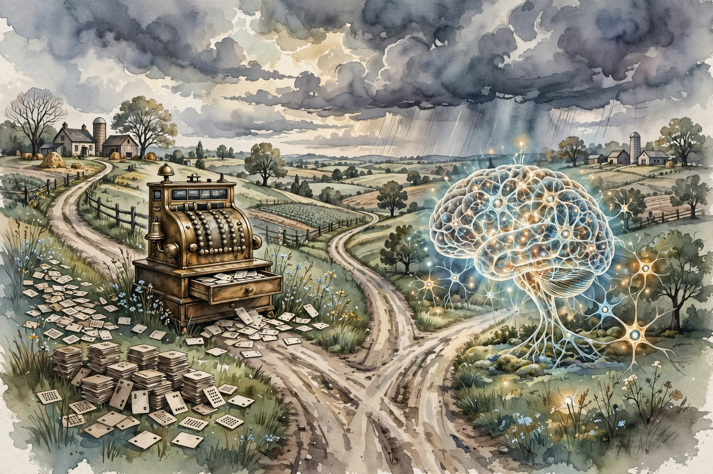
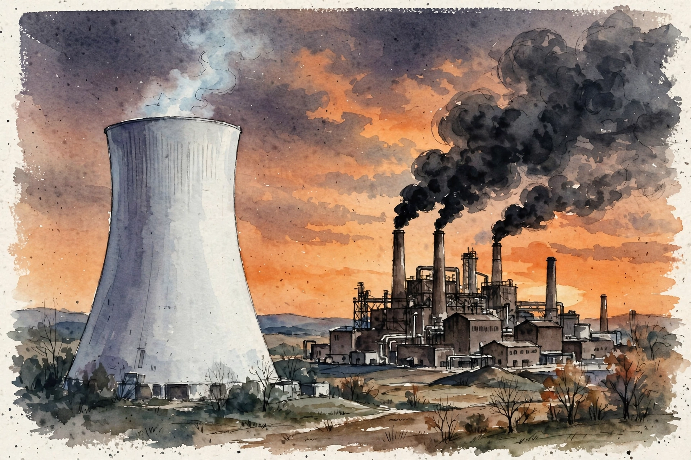

Huberman Lab · Episode 4 · Companion
Risk, Innovation and AI
Marc Andreessen traces the 1943 fork between brain models and calculating machines, names the three reasons AI started working, and prosecutes the precautionary principle through the story of nuclear power. This companion follows the conversation in order.

Illustration. The 1943 fork: the calculating machine won on practicality. The brain model waited 80 years. Made for this page. AI-generated watercolor in a New Yorker style, made for this page. It carries no words or labels.
Watch. The official episode video on youtube-nocookie, the only external dependency on this page. Use the chapter menu above to jump to any section of this companion as you listen.
The Wisdom Index: every nugget in this companion
Opening section
The fork: brains vs calculating machines
SOURCE When the computer was invented in the 1930s and 1940s, people like Alan Turing and John von Neumann debated its fundamental architecture. Two options stood open. Option A: model the computer on the calculating machine, the cash register, the punched-card loom, a device that executes exact instructions. Option B: model the computer on the human brain, neurons interconnecting, synapses, information processing the way biology does it. The original paper on neural networks was published in 1943.
SOURCE The industry chose Option A. Andreessen's explanation: the calculating-machine model was the technology that was practical at the time. Everything we use, up to and including the iPhone, descends from the calculating-machine fork, not the brain fork.
The idea waited 80 years
The 1943 paper to the 2023 episode is 80 years. The episode gives the endpoints. The subtraction is this companion's.
Source: episode transcript, history section. The 1943 date is the episode’s. The 80-year figure is worked arithmetic from the episode's dates.
SOURCE Because of the fork, computers as we know them are mathematical savants at best. They do lots of calculations. They execute extremely detailed programs. In Andreessen’s words, “They’re hyper literal.” The programmer's rule he states: you must get every instruction correct, because the computer does exactly what you tell it. Bugs are always the programmer's fault. The computer has no judgment, no interpretation, no independent understanding.
Nugget 1 · History
Practicality picks the architecture
What happened. The brain model lost in the 1940s not on merit but on buildability. You could build a cash register with 1940s technology. You could not build a brain. So the iPhone descends from the cash register.
Why it matters. The winning architecture is rarely the best idea. It is the best idea you can build now. The better idea waits for its hardware, sometimes for 80 years.
The principle. When a good idea loses, check whether it lost on merit or on practicality. If practicality, keep the idea. The hardware comes later.
Nugget 2 · Computing
Hyper-literal savants
What happened. The calculating-machine fork produced computers with no judgment and no interpretation. They do exactly what you tell them, step by step, and every bug is the programmer's fault.
Why it matters. This is the baseline the AI boom breaks. Neural networks are the return of Option B: machines that interpret rather than merely execute.
The principle. Know which fork your tool descends from. A hyper-literal tool needs perfect instructions. An interpreting tool needs good judgment about its outputs.
Early section
Why AI started working: the three reasons
SOURCE Andreessen names three reasons AI started working, and the first is data scale. His worked example is face recognition. Ten or twenty years ago, systems trained on thousands or tens of thousands of photos. Now they train on billions and billions of photos, all photos of people on the internet. Machines are now better than humans at recognizing faces because the training data grew enormously.
The dataset jump
Thousands to billions is about a 100,000-fold increase. Worked arithmetic: 1,000,000,000 divided by 10,000 equals 100,000. The episode gives the endpoints.
Source: episode transcript, face-recognition section. The billions figure describes today. The thousands figure describes ten or twenty years ago. The 100,000-fold figure is worked arithmetic.
SOURCE The ChatGPT version of the same reason: ChatGPT works because it trained on the entire internet of text. That corpus did not exist until the internet itself existed, which is new in roughly the last decade. The training data is a historical accident of timing.
SOURCE The remaining two reasons, per the episode's framing, are the standard pair the field cites: better algorithms and more compute. The episode details the dataset reason fully and presents the three-reason structure. The Fei-Fei Li episode in this track independently confirms the same triad: data plus neural network algorithms plus GPU computing converging in 2012. Two episodes, same three reasons.
Nugget 3 · AI
Data scale woke AI up
What happened. Nothing about the human face changed. The algorithm family stayed in place. The dataset grew about 100,000-fold, and machines passed humans at recognition.
Why it matters. Commentators credit the algorithm. Both episodes in this track credit the data first. Misattributing the cause misdirects the next investment.
The principle. When a capability jumps, ask what actually changed: the algorithm, the data, or the compute. Bet on the one that moved.
Nugget 4 · Timing
Date a technology by its data
What happened. ChatGPT could not exist in 2005 because its training corpus, the entire internet of text, did not exist yet. You cannot train on a corpus that has not been written.
Why it matters. Data availability gates technology. The question is whether its fuel exists yet, not just whether the idea works.
The principle. For any data-hungry technology, find the date its corpus came into existence. That date, not the algorithm's birthday, is when the clock starts.
Middle section
The precautionary principle vs nuclear power
SOURCE The precautionary principle says the inventors of a new technology must prove it will not have negative effects before rolling it out. Andreessen's history: this is a new idea, invented in the 1970s by the German Greens, for one specific purpose. Huberman guesses famine. The answer: to prevent civilian nuclear power. The logic: prove a reactor can never melt down. As an engineer, Andreessen says, you cannot prove a negative about the future. So the principle functioned as a veto.
And we got all of modern civilization by people inventing things and rolling them out.
Marc Andreessen, middle section of the episode
SOURCE Fast-forward 50 years: the veto worked. Nuclear stalled across Europe, the US, and much of the world. Andreessen predicts it will not reverse, because the institutions would have to admit a 50-year error, and institutions rarely do.
SOURCE The transfer to AI: the same principle is now aimed at AI in Washington. The demand is that developers prove AI can never be used for bad things. Andreessen's answer is the nuclear answer: you cannot prove that, so the demand is a veto in disguise.
Nugget 5 · Policy
A veto disguised as caution
What happened. The German Greens invented the precautionary principle for one purpose: stopping civilian nuclear power. The demand to prove zero future harm is unmeetable by any engineer, so it functioned as a veto for 50 years.
Why it matters. The same demand now targets AI. Recognizing the pattern matters more than debating any single regulation: an unmeetable proof burden is a ban wearing caution's clothes.
The principle. When someone demands proof of zero future harm before you ship, name it as a veto, not caution. Then propose the alternative: ship with the countermeasure built alongside.
Middle section
Project Independence: the road not taken
Photograph. Marc Andreessen. Real photograph via decrypt.co. Used with source attribution. This is not an AI-generated image.
SOURCE In 1971, Richard Nixon defined Project Independence. The target: 1,000 new state-of-the-art civilian nuclear plants in the US by 1980. The whole grid on nuclear, cars on electricity, off oil entirely. What happened: Nixon also created the EPA and the Nuclear Regulatory Commission. The NRC did not authorize a new nuclear plant in the US for 40 years.
SOURCE Hand-worked numbers from the episode's figures: 1,000 plants in 9 years means about 111 plants per year, roughly one every 3 days. The target meant industrial mobilization at wartime pace. The NRC's 40-year freeze is the opposite number: zero authorizations in four decades.

Illustration. The backfire: the safe option frozen, the dirty option burning. AI-generated watercolor in a New Yorker style, made for this page.
SOURCE The episode's central irony: the Greens blocked nuclear to protect the environment. Solar and wind are not reliable: sometimes it gets dark, sometimes the wind does not blow. So when nuclear is blocked and renewables cannot carry the load, utilities fire up coal plants. The consequence of the precautionary principle, on its own terms, was a massive spike in coal use.
SOURCE The episode does not deny the accidents: Three Mile Island melted down, Chernobyl melted down, Fukushima melted down. Andreessen's point is about proportion. The fear is real and the accidents are real, and the alternative the fear produced, coal, is worse by the episode's accounting.
Nugget 6 · Scale
One plant every 3 days
What happened. Project Independence demanded 1,000 plants in 9 years: about 111 per year, one every 3 days. The country then built zero in 40 years. The gap between the plan and the outcome is the whole story of American nuclear power.
Why it matters. Big targets reveal the mobilization they need. One plant every 3 days means wartime supply chains, workforce, and regulation. The target died when the regulation turned hostile.
The principle. Convert every big target into its required pace. If the pace needs a wartime footing, say so. Then check whether the institutions allow that footing.
Nugget 7 · Consequences
The backfire: precaution produced coal
What happened. The movement blocked nuclear to protect the environment. Intermittent renewables could not carry the grid. Utilities fired up coal. The principle produced the outcome it was invented to prevent.
Why it matters. Blocking the safe option does not remove the demand. The demand finds the next available supply, which is usually worse. Second-order effects are the policy.
The principle. For any blocked technology, ask what fills the gap. Judge the block by the replacement, not by the intention.
Late section
Risk, innovation, and the innovator
SOURCE Exceptional innovators take risks in their profession, and some take risks in every domain of life. If one part of life gets stable, some find a way to blow it up. The same traits appear in the arts: Picasso's turnover of partners was, by his own account, a source of his creativity. Cancellation risk now discourages the fly-close-to-the-sun category. Research that is not politically palatable does not get done, or does not get discussed.
SOURCE Huberman keeps a written file, on paper because he is afraid to put it electronic, of topics he will not discuss publicly. The list keeps getting longer. Andreessen's comment: that gives up the whole game. A society where the curious keep paper files of forbidden questions strangles its own innovation.
SOURCE Two historical razors from the episode. Lysenkoism: the Soviet Union's state-enforced false biology. Andreessen's claim: the Soviet Union never recovered from it, and the wheat crisis that helped end the country traces back to Lysenko. The lesson: when the state picks the science, the science dies and the state follows. Survivorship bias: people say markets always recover after crashes. Andreessen says that is survivorship bias. Most stock markets in history crashed and never recovered. People cite the American market because it is the one that did not do that.
Nugget 8 · Curiosity
The paper file of forbidden questions
What happened. Huberman keeps a growing paper list of topics he will not discuss in public, on paper because electronic feels unsafe. Andreessen says that concession gives up the whole game.
Why it matters. Innovation needs the questions that are not yet palatable. A society where the curious self-censor strangles its own future discoveries.
The principle. Notice what you will not say in public. That list is a map of delayed discoveries.
Nugget 9 · History
Lysenkoism
What happened. The Soviet state enforced false biology. Crops failed. Andreessen's claim: the country never recovered, and the wheat crisis helped end it.
Why it matters. When the state picks the science, the feedback loop between reality and belief breaks. Systems with broken feedback loops do not self-heal.
The principle. Protect the loop between evidence and belief. Whoever controls the science controls the harvest, literally.
Nugget 10 · Statistics
Survivorship bias
What happened. People cite the American market's recoveries as proof that markets always recover. Andreessen's correction: most stock markets in history crashed and never recovered. The American market is the survivor, not the rule.
Why it matters. Recovery stories are sampled from survivors. Basing policy on them assumes a self-healing that most systems lack.
The principle. When someone says it always recovers, ask for the ones that did not. Count the dead markets before you trust the live one.
Closing section
Every AI risk has an AI countermeasure
SOURCE Andreessen's decision rule for AI fear: every time you think of a risk, think of the countermeasure you can build with the same technology. The countermeasures do not just offset AI risks. They offset existing risks: better vaccines for pathogens, better tools against cyberattacks, better filters for bad content. The AI physician example: getting decent healthcare is hard even for people with means and insurance. AI physicians could collapse the phone calls, waits, and referrals.
SOURCE The AI assistant as personal filter: instead of a platform deciding what you see, you tell your own AI assistant what you want. Show me everything, or filter by my rules, programmed and controlled by me. Andreessen claims programmed personal filters will be more honest and straightforward than current platform moderation.
SOURCE The episode's geopolitical frame: China takes a different path with AI, toward population control and authoritarianism, and will export that vision. The US conversation is split: punish American tech companies, or partner with them to compete with China. The episode does not resolve the tension. It presents it as the Cold War dynamic of AI: two systems with different views of freedom, competing through technology.
Nugget 11 · Risk
Price the countermeasure too
What happened. Andreessen refuses to price AI risk alone. Every risk gets a paired countermeasure built with the same technology: vaccines, cyber defenses, personal filters, AI physicians.
Why it matters. Risk-only accounting always says stop. Risk-plus-countermeasure accounting asks who builds the defense fastest. The second frame favors builders over blockers.
The principle. Never accept a risk analysis without its countermeasure column. If the other side cannot name the defense, they have not finished the analysis.
Takeaways
- The 1943 fork: computers copied the calculating machine because it was practical. AI is the brain model returning 80 years later. Practicality picks the architecture. The idea waits for its hardware.
- Data scale woke AI up. Face recognition went from thousands of photos to billions, about a 100,000-fold jump. Commentators credit the algorithm. Both episodes in this track credit the data first.
- The precautionary principle demands proof of zero future harm. No engineer can prove a negative about the future, so the demand functions as a veto. It was invented in the 1970s to block nuclear power, and it worked.
- Blocking nuclear produced coal. When the safe option is vetoed and renewables cannot carry the load, the grid burns coal. Caution that blocks the safe option is not caution.
- For every AI risk, build the AI countermeasure with the same technology. Price the risk and the countermeasure together.